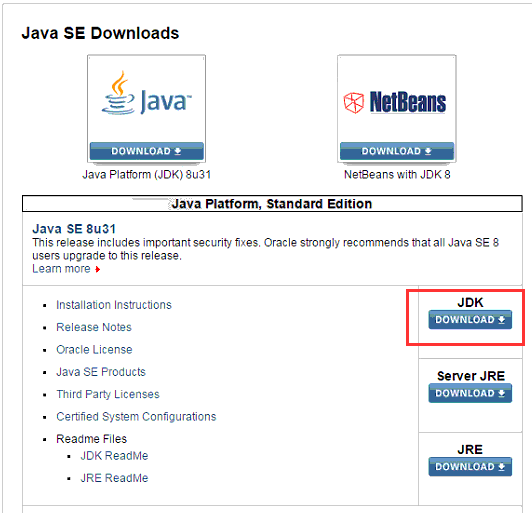
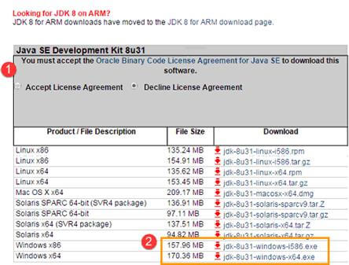
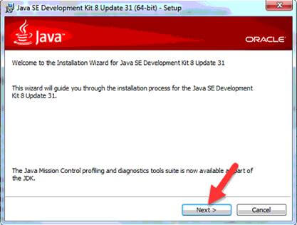
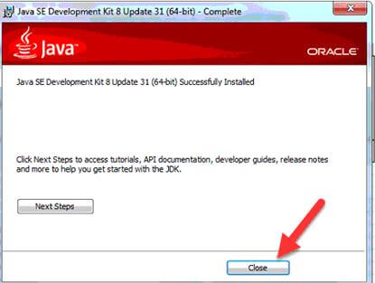
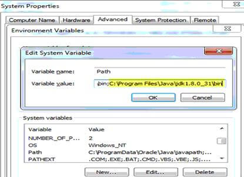
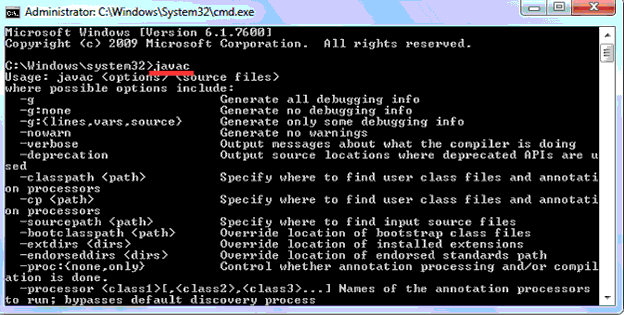

How to install Java JDK 8 and Java 8 download
Download Java from http://www.oracle.com/technetwork/java/index.html

1. Accept License Agreement and download latest java JDK for your version (32 or 64 bit) of java for Windows.

2. Once the download is complete, run the exe to install jdk. Then click Next

3.Once install is complete click Close

4.Goto Control Panel>System and Security>System>Advance system settings
5. Select Environment Variable. Now in System variables , select Path and click on Edit…
Now in Variable value , go to the end of the line and paste the entire path of the location
where we have installed Jdk.
Usually for Java 1.8 we have path as :
C:\Program Files\Java\jdk1.8.0_31\bin

If the latest version on Java website is 1.8.0_65, your path will be C:\Program Files\Java\jdk1.8.0_65\bin
6. Restart your PC. Go to command prompt and type javac
If you see a screen like below ,then Java is installed.

All Done